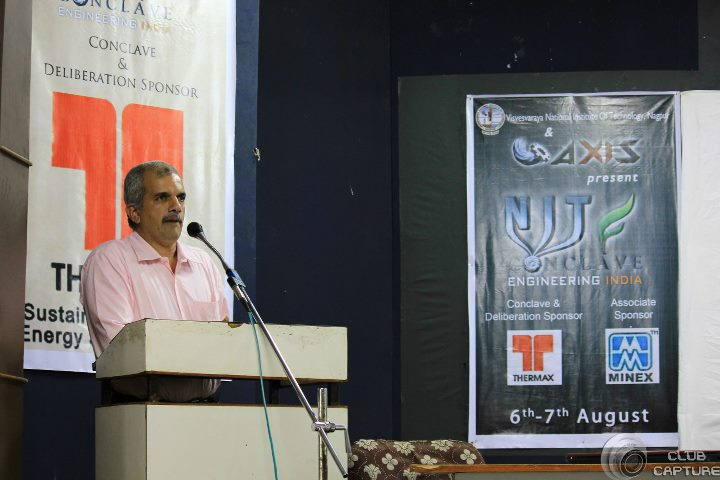
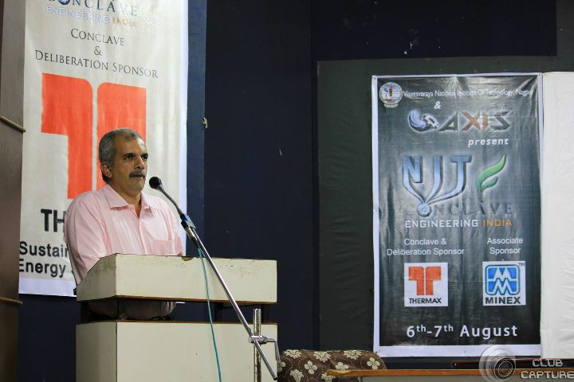

Leveraging over 200 MW of consulting portfolio experience, an active player in the solar industry, with the commencement of 100 MW across solar park facilities....an emerging name in the solar power sector, Rays Expert Pvt. Ltd. with Mr. Rahul Gupta, MD as the pioneering visionary in this sector. Graduated from IIT Roorkee, with expertise in Electrical/Electronic Manufacturing, Mr. Gupta founded Rays Expert in 2009 and has led to the development of 230 MWs of solar plants across India. Mr. Gupta has always focused on integrating technologies & expertise across the entire solar value chain & delivering more predictable and bankable PV energy solutions that increase energy yield.
On disclosing the main idea behind his business model, Mr. Gupta says," Thermal power fetched a profit of Rs. 3/unit, bur solar power got Rs 18/unit." Maximizing value and minimizing risk has remained the key feature behind the success of Ray Experts. He has been awarded with several accolades like Asian Power Award & Global Quality Award.
Today, Mr. Gupta manages 3 projects, spanning 500 acres in Bikaner along with many upcoming investments. The 120-employee company is eyeing a turnover of Rs 750 crore in this fiscal year.
We wish him and his firm good luck for future....
Nizamudheen Valliyattu is an exceptionally smart entrepreneur who possess both knowledge and curiosity regarding consumer behaviour, has convincing power. He performs strategic, operational and organizational role perfectly. He has rich experience in a wide array of business verticals.
He ensures marketing activity and sales drive initiatives, develops innovative analysis techniques to enhance social market research. The best part about him is that he is able to understand and speak about brands with a sense of ownership.
SocialTiger is the site of intersection of big data and social media. As one of the hottest start-ups in these arenas, this pioneering organization delivers world-class, revolutionary social business intelligence solutions to small, medium and large scale organizations. They provide real-time threat and opportunity alerts and deep market analysis to reduce risk, maximize revenues and drive strategy.
Nitin Tailor is the CEO & co-founder of Serve Happiness Foundation, He oversees strategy and management for the company. He has a proven record in academia, technology startups and social sector in Europe and INDIA. Mr. Tailor received a bachelor's in Computer Engineering from DDIT, Gujarat and attended IIIT Bangalore where he earned an Mtech in Information Technology. He is also a Linnaeus Palme scholarship awardee during which he attended Malmo University, Sweden .He is both a Startup Weekend and Startup 2020 alumni and his teams had been runners up and winners at these programs. He is also certified for Technology Entrepreneurship by Stanford University's Venture Lab. He always find happiness while working towards bringing positive change in society. Taking first step towards this he led and set up HMP Foundation (A Non-Profit Organization) to improve health and education for poor people in rural areas.
A networking destination and lifestyle based product discovery service that helps you discover and save creative ideas. Use weawe to earn money, find people, their style stories, discover things you did not know you were looking for, to get complete online shopping experience and desire more. We aim to create a platform that goes beyond just shopping but sharing inspirations and things our users care about.
Ankit Tanmay Mishra and Saket Shrivastava are two third year electrical engineering students from NIT Jamshedpur. While Saket loves to build All terrain vehicles and design mathematical algorithms Ankit loves to do coding and design User Experience of the website. Saket is CEO at Weawe and looks after management and operations. Ankit is CMO and responsible for product development, marketing and building weaweás user community. Both of them are operating weawe from their hostel room at NIT Jamshedpur.
He did his B.Tech in Computer Science (2008-2012) from Maulana Azad National Institute of Technology (NIT Bhopal). Before beginning with this start-up, Hashtales In (in July 2014) he worked as a Developer/ Consultant in Polaris Group. He has also worked in giants like Hewlett - Packard. His start-up Hashtales, helps event organizers by picking up the crowd-sourced Instagram photos through hash tags of their choice and generating a real-time slideshow which can be showcased on big screen and hence draw more attendees.
| 08:00-09 :30 | Breakfast |
| 09:30-10:00 | Registration |
| 10:00-11:30 | Opening Ceremony |
| 11:30-13:00 | Presentation |
| 13:00-14:30 | Lunch |
| 14:00-15:00 | NIT talks with Nitish |
| 15:00-16:30 | Presentation |
| 16:30-17:30 | Guest Lecture |
| 18:00-19:30 | Culture Night |
| 20:30 | Dinner |
| 08:00-09:30 | Breakfast |
| 09:30-10:30 | Guest Lecture |
| 10:30-12:30 | Presentation |
| 12:30-13:30 | Guest Lecture |
| 13:30-14:30 | Lunch |
| 14:30-16:30 | Panel Discussion |
| 16:30-17:00 | Tea Break |
| 17:00-18:00 | Post Conclave and Closing Ceremony |
 
